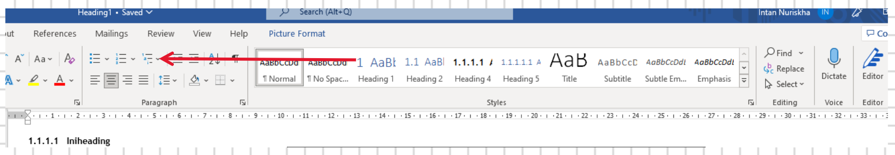

Batch Multiple Picture Into Word via HTML
Memasukkan sejumlah gambar ke Word sekaligus melalui HTML
Catatan
Tersedia juga tutorial yang serupa menggunakan quarto di TSM-1: Tutorial: Batch Multiple Picture Into Word via Quarto.
Berikut tutorial Batch Multiple Picture Into Word via HTML yang dibuat oleh INR.
1 Ketentuan
- Telah memahami pola teks di UltraEdit.
2 Tutorial
2.1 Persiapkan identitas gambar, nama heading & caption gambar
- Untuk mendapatkan/edit identitas gambar dapat dilakukan dengan
cmd:- buka
cmddi lokasi gambar berada - ketik
dir /b | clippaste di excel atau di notepad
- buka
- Renamer identitas gambar dapat menggunakan bantuan
cmddengan cara:- buka
cmddilokasi gambar berada ren "odd name" "new name", contoh
ren "detail tulangan kolom-balok.jpg" "tulangan balok.jpg"
- buka
2.2 Folderisasi gambar
- Susun folder & rename gambar
- folder di tempatkan di satu tempat untuk memudahkan pekerjaan
- rencanakan identitas gambar sehingga memiliki pola
contoh:nnmm.jpg, dengannn: number,mm: nama gambar
2.3 Susun heading, gambar & caption di word
- Susun format heading

- Insert picture dengan format: link to file
- Gunakan heading “caption” pada nama gambar
- Save file word dengan format “html”
2.4 Editing HTML dengan UltraEdit
- Buka file “html” yang telah di save sebelumnya menggunakan UltraEdit
- untuk memudahkan proses editing pada UltraEdit maka lakukan pencarian terkait nama/identitas heading yang telah di tulis sebelumnya.
- find dalam ultraEdit : ctrl + F + kata kunci yang di cari + Next
- biasanya format heading terdapat di
</h4>sehingga pencarian dapat dilakukan dengan kata kunci</h4>
2.4.2 Text yang menunjukkan link/identitas gambar

2.5 Cut & Paste bagian data yang akan diedit
- Open new sheet pada Ultra Edit
- Cut & Paste bagian data yang akan di edit di new sheet
2.6 Lakukan Duplikasi
- Duplikasi TH, TG, TC sesuai jumlah yang di rencanakan untuk mempermudah proses duplikasi maka bentuk paragraf TH, TG, TC dapat diubah menjadi 1 baris dengan cara:
ctrl + L + conPtab
menjadi
2.7 Numbering
insert number pada setiap baris, numbering dilakukan untuk mempermudah proses shorting aktifkan column mode : Alt +C + arahkan pada kolom pertama + column + insert number
2.8 Sorting Data
Lakukan sorting data
inctive column mode : alt + C
sorting data : file + sort+ advanced sort/option + masukan number + sort
- bagian yang di highlight tidak selalu di isi dengan angka 3. number di isi sesuai dengan jumlah karakter
- terdiri dari tiga angka sehingga kolom sorting di isi dengan number (3)
- masing2 format text TH, TG, TC telah terpisah dan lebih mudah untuk di edit
2.9 Isolasi & Edit Data
- Isolasi salah satu text dan paste di new sheet
- Setelah di isolasi urutkan kembali data dengan cara sorting “step-8”, start column di isi dengan angka 1 sehingga urutan no kembali seperti sebelumnya
- Edit masing-masing TC, TH, TG sesuai dengan format nama yang telah di siapkan
2.10 Sorting data kembali
- Setelah di edit, semua text (TH,TG,TC) di sort ulang dengan mengisi start column dengan angka 1 sehingga tampilan text kembali seperti sebelumnya (tampilan di “step-7”)
- Hapus urutan no
2.11 Replace
- Copy semua data pada step-10 dan replace ke body asli (tampilan gambar di step-4)
- Save as file (format file masih dalam bentuk html)
- Open file tersebut di word
SELESAI